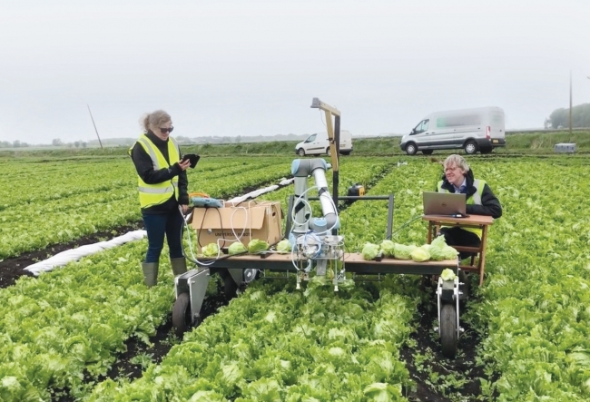

서비스 소개
빅데이터 기반 인공지능으로 청년 농부들의 자립을 돕습니다.

청년 농부들이 재배할 작물을 선택할 때 참고할 수 있는 정확한 수익 예측 정보를 제공합니다.
재배 지역과 농지 정보를 입력하면 기후와 재배 조건을 분석해 적합한 작물을 추천하고, 작물별 예상 생산량과 판매 가격, 생산비를 바탕으로 예상 수익을 계산합니다.
작물 수익 예측 기능
수익 예측
재배 지역과 농지 정보를 입력하면 기후와 재배 조건을 분석해 적합한 작물을 추천하고, 작물별 예상 생산량과 판매 가격, 생산비를 바탕으로 예상 수익을 계산합니다.
이벤트 활용
재배 지역과 농지 정보를 입력하면 기후와 재배 조건을 분석해 적합한 작물을 추천하고, 작물별 예상 생산량과 판매 가격, 생산비를 바탕으로 예상 수익을 계산합니다.
소식신청
작물별 예상 수익을 예측한 후 소식을 받을 수 있습니다.
이용 방법
- 재배 지역과 농지 면적 등 재배 정보를 입력합니다.
- 추천 작물과 작물별 예상 수익을 확인하고 비교합니다.
- 재배 환경과 예상 수익을 고려해 작물을 선택하고 영농 계획을 세웁니다.
작물 수익 예측
작물 정보
0 / 10
정보 활용 동의
동의 후 수익 예측을 시작할 수 있습니다.
작물 수익 예측 설정
1 · 재배 정보 2 · 예측 조건 3 · 내용 확인
재배할 작물 정보를 입력해 주세요.
수익 예측 조건을 선택해 주세요.
입력한 내용을 확인해 주세요.
작물 이름
예측 기간
생산비 반영
작물 수익 예측 설정이 완료되었습니다.
설정한 조건을 재배 계획으로 저장하고 다시 확인할 수 있습니다.
저장한 재배 계획
계획은 이 페이지를 열어둔 동안 보관됩니다. 새로고침하면 목록이 초기화됩니다.
저장한 계획이 없습니다. 위에서 예측 조건을 설정하고 완료한 뒤 ‘재배 계획 저장하기’를 눌러 주세요.
저장한 계획 내용
작물 수익 예측 소식 받기
이메일을 입력한 뒤 신청해주세요.